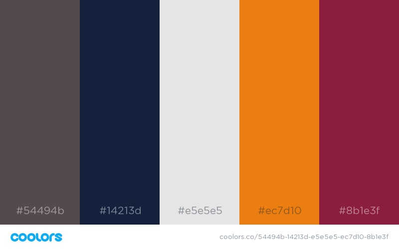

My Introduction to HTML and CSS
The story of a beginners website
I ended up learning an introduction to web development this year.
This wasn’t originally the plan, nor was it something I’d really thought I’d ever want to do. I had no idea how addictive and rewarding web dev was going to be.
I had been tinkering away at Udemey courses learning Python and C for the last 12 months. I hadn’t really been getting anywhere new with them, and felt like their potential was still a long way away from where I was. I went for Python because it was familiar and linked to Machine Learning, which I am really keen on (all the things you can do!).
But for a lot of reasons it all fell to the wayside (see this post on my failed attempts to learn to code). I still didn’t have a real project, something I wanted to see through all the way to the end. I just had a few ideas and an inkling of the shape of some bigger thoughts.
Then a few months ago I had an idea about a story I wanted to tell. A complicated idea. An idea I wanted to tell not through a book or magazine, but through an interactive website. I firmly believe that the future of storytelling is through interactive multimedia. Books with QR codes and easter eggs.
My plan was “I’ll just do what I’ve always done and build it on WordPress”. I’ll be excited about it for a week and then forget all about it until I get the bill.
My partner had opinions about this along the lines of “you shouldn't use WordPress for that, it’ll be frustrating, it won’t do exactly what you want, you should code it (and I’ll teach you)”.
My thoughts were “Nah, WordPress will be great, it’s fine”. Though I was a little unenthusiastic about paying lots of fees for a site that was never going to make me money, and was really just an excuse to tinker and write.
So after some back and forth I was swayed. The world of Front End coding awaited.
My partner was excited that I was going to be learning some basics of coding and we could do it together.
I was excited about the story I was going to tell.
In the end, the story fell by the wayside due to other projects opening up with possibilities due to newfound coding skills, but the dev stuck.
I started like a lot of people do. In Atom with an HTML shell and a bit of a plan.
And somehow, unlike all the other code I’d tried before. This was fun! This was addictive! I did things and things happened. It was immediate, and rewarding and there was visual feedback. I could see what I was doing and how what I did made a difference. There was a direct cause and effect and it felt good.
There were battles, and learning leaps about divs and id’s. But they were just challenging enough to keep me intrigued, without putting me off completely. A good challenging stretch zone.
I learned how to link a CSS file and start formatting, colours and fonts awaited. This was even more rewarding, as I made my site look.. Well, less horrendously ugly. Raw HTML is somewhat uncomfortable to look at in this day and age.
I had great fun finding a colour scheme with a colour scheme generator.

Then I chose some fonts on Google Fonts. The trick there was to NOT get overwhelmed at all the options and just spend hours and hours contemplating design possibilities.
Then I got introduced to Font Awesome, and learned about adding in social media as text rather than as images. For some reason this was an extra rewarding process to go through.
And I tinkered and tinkered until it was ready to be deployed. I designed a logo, registered a web address, added in the favicon (the tiny image at the top of the tab) and wrote some content. It was good to go.
Deployment was its own pain point, an incredible pain point, and has it’s own blog as a result. There was a lot of steep learning curves with AWS, CI and Git.
The site is not beautiful. It’s not perfect. But it’s functional and works for the time being. As I build my skills I have no doubt I’ll go back and look at the code and squirm with discomfort. While the code may be far from perfect, the project got me started with web development and gave me an incentive to learn. That incentive was invaluable.
The thing I’m most proud of in this design is the use of flexbox, which I learned through a coding game, Flexbox Froggy, I cannot recommend this enough.
That game was instrumental in me understanding and being able to apply flexbox. And it made my website work all that bit closer to what I was imagining.
All of this was backed up by watching my introduction to web development course on Udemy. I don’t agree with everything in the course, because I now have my own ideas and opinions about front end code, and know enough to have discussions about best practice. But, having that course ticking away in the background was key to me understanding some concepts, like building forms and playing media. It was also an extra layer of learning and consolidation which was infinitely valuable.
Now this website is deployed, it hasn’t been updated in a while due to time constraints, and the excitement of other projects. But I still believe it has a lot of potential. It could be a great way to tell a story in a very different kind of way.
After tinkering around here and learning a lot, although not making anywhere near enough mistakes yet. I went on to consolidate my skills with my second, infinitely better site. The story continues.